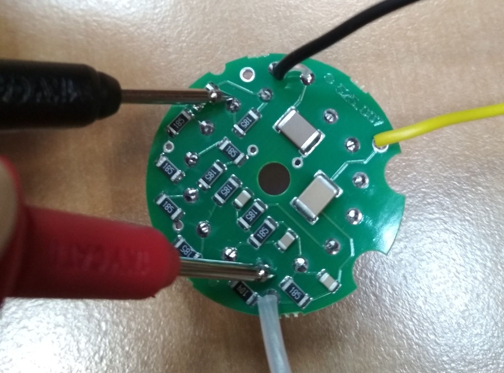
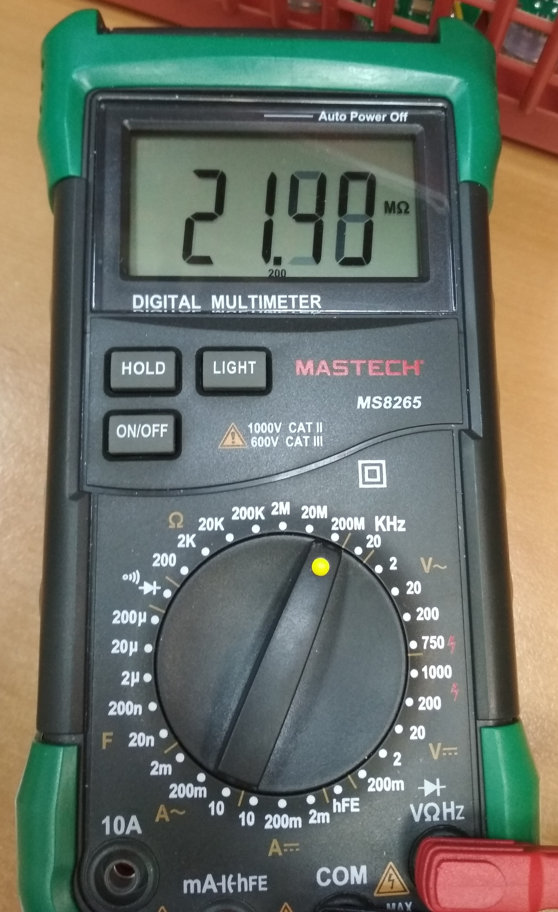

Главная
Проверка делителя
Проверка делителя
Проверка производится путем прозвонки мультиметром схемы на плате делителя.  Показания мультиметра (21,4 МОм):  Если показания отличаются, то проверяем правильно ли все запаяно и исправность всех элементов.